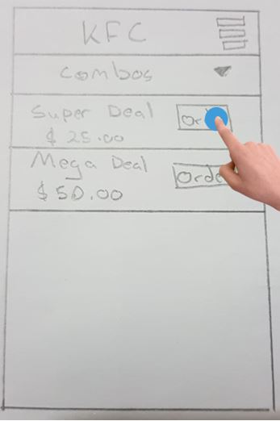

Description of Storyboard
The Restaurant Selection Screen is displayed to the user and the user chooses a restaurant from the various food outlets listed. The user then clicks their restaurant choice and the Menu Screen is displayed. The user browses the list of menu options available. The user can click the drop down toggle and can navigate to the various sections listed. Here the user can choose individual items, sides and even drinks.
When the user clicks on the ‘Order Button’ this takes the user to the Customize Screen. In this screen the user can select or deselect the toggle to choose their preference meal choice whether it is spicy or not. Under the side choice order, the drop down toggle displays the various sides available to the user for selection. The user can order one or more sides by specifying the amount next to the side choice. By selecting the ‘Special Request’ button, the user can specify the ingredients or condiments they prefer. By selecting the ‘star’, this implies that the user makes this a favorite order where they can select this specific order for future purchases. The user can select the amount orders they want for the specific order. Then the price is displayed according to the order made.
The user clicks the ‘Add To Cart’ button and this takes them to the Cart Display Screen where the user can see the orders made and the estimated time, the total cost of the order and the payment method. When the user clicks the ‘change’ button they can change their credit card number. Finally, the user can click the ‘order’ button to purchase their specific order.
Interface Illustrated

1. Selecting a restaurant
2. Selecting an order available


3. Customizing/finalizing the order chosen

4. Placing the order